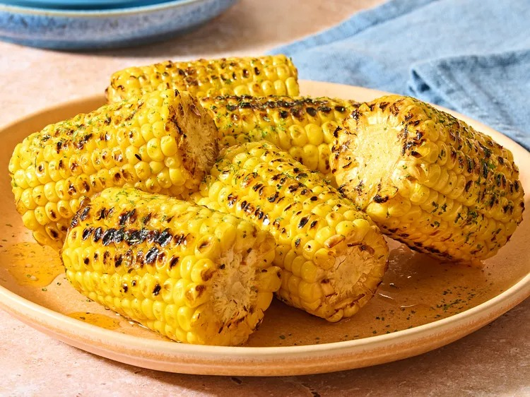

Home Page
Grilled Cajun Corn

Description
This is a small description about this lovely recipe that
will teach you how make some Cajun Corn on the grill. Yummy!
Ingredients
- 2 Ears of Corn
- 6 tablespoons of unsalted butter
- 1 teaspoon of Cajun seasoning
- 1/2 teaspoon of parsley flakes, for garnish [optional]
Instructions
- Preheat outdoor grill to medium-high heat
- Cut each ear of corn into thirds
- Place corn on the grill.
- Cook for 15 minutes, turning over every 5 minutes
- Meanwhile, melt butter and Old Bay in a skillet over low heat
- Move grilled corn to a large bowl, drizzle seasoned butter, and serve
Original recipe found
Here